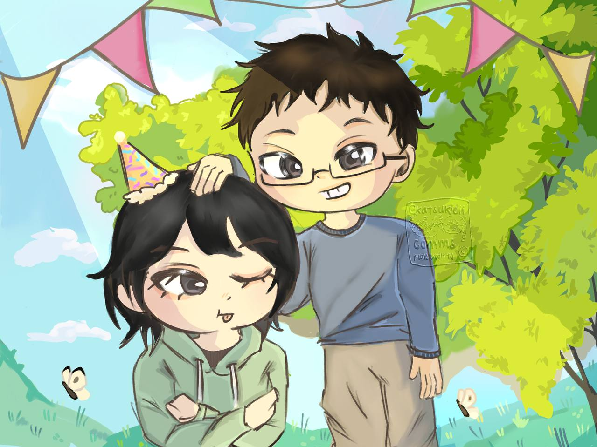

4 images recovered from the archive of us
Author's Note
Happy birthday. Simply dropping the commissioned art in chat would have been too easy and not nearly dramatic enough, so I made you a tiny archive instead. This is part gallery exhibit and part walk down memory lane built from moments I wanted to keep.
Scene 1

The Beginning
by @fws.and
Do you remember when we first met? Not gonna lie I entered Intro to Psych out of pure curiosity and was a tad pissed at you when you DID'NT SHOW UP FOR OUR FIRST PRESENTATION. But when we were paired up for the second project was when we started getting close and not gonna lie, taking Intro to Psych was one of the best decisions I made! partially cause it was one of the few As I got in my entire Poly career, but also partially cause I met you as a friend!
Scene 2

Under the Stars
by @keyritine
I always appreciated the post movie chats we have at the roof of Vivo, it was just like idk nice to just chat about the movie and other random stuff.
Scene 3
.png)
By the Bay
by @keiisqn
Might be weird to immortalise the most embarassing moment of my life (so far!) But I believe it is worth immortalising I am incredibly greatful that our friendship was strong enough to survive the awkwardness of my horrible confession a lot of other friendships don't but I am very glad ours managed to ride through that rough patch and come out as strong as it ever war.
Scene 4

Happy Birthday!
@bakugoatbiggestfan
Happy Birthday Shorty!
End Notes
Happy birthday, Orcapine.
Thank you for being the kind of person who makes elaborate gifts feel necessary. I wanted this to feel like something you could stumble across at 1:00 a.m., grin at immediately, and return to the way people return to favorite posts, favorite fics, and old photos they never quite get tired of.
In conclusion, this archive was assembled in your honor, with great care and a long memory.